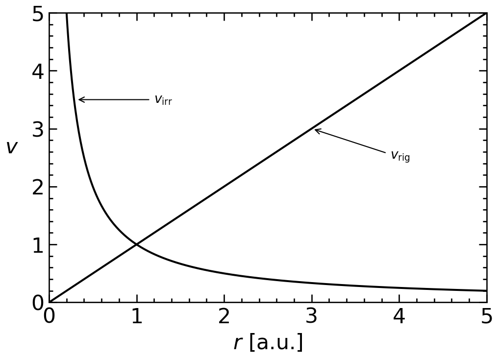
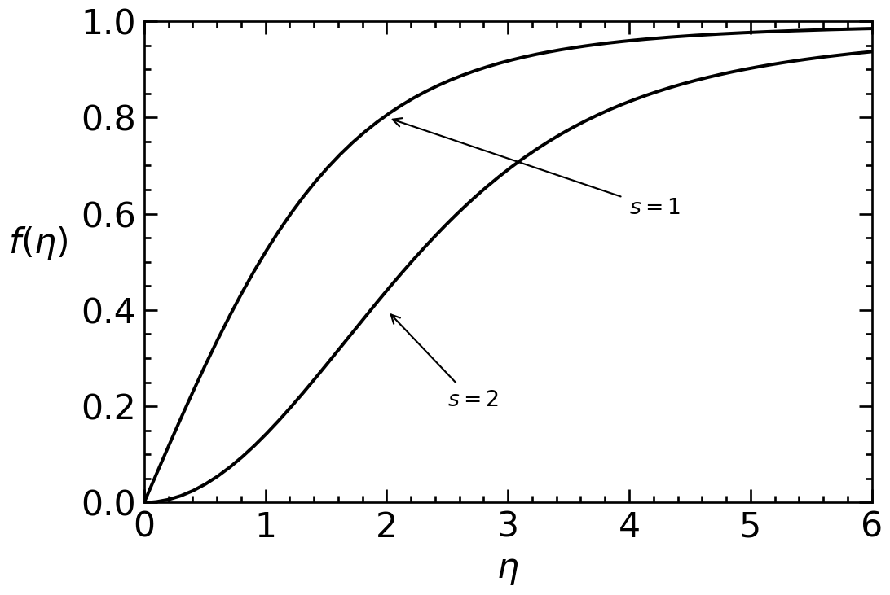

BEC simulazioa
Abstract
This analysis provides … |
Keywords
TFG, Grade of Physics, Physics Lab, BEC
1 ROADMAP TFG
Esta guía organiza la lectura de los textos fundamentales para entender la física del Helio-II y cómo implementarla numéricamente en la librería PyGPE .
1.1 1. Fundamentos Teóricos (La Ecuación de Gross-Pitaevskii)
Libro: Bose-Einstein Condensation and Superfluidity - Pitaevskii & Stringari.
- Capítulo 5: Secciones 5.1 y 5.3.
- Por qué: Aquí se deriva la GPE y se define la longitud de curación (\(\xi\)). Es la escala física que determinará el tamaño de tu rejilla (grid) en PyGPE.
- Capítulo 6: Secciones 6.1 a 6.4.
- Por qué: Explica la hidrodinámica cuántica. Aprenderás a extraer la velocidad del superfluido a partir del gradiente de la fase de la función de onda.
- Capítulo 8: Superfluid \(^4\)He.
- Por qué: Explica las particularidades del Helio-II frente a otros condensados, como la fuerte interacción entre átomos.
1.2 2. Fenomenología de Vórtices (Lo que vas a simular)
Libro: Quantized Vortices in Helium II - Russell J. Donnelly.
- Capítulo 4: Estructura de los vórtices cuantizados.
- Por qué: Describe el perfil de densidad del núcleo del vórtice. Es esencial para validar que tus resultados de PyGPE sean físicamente correctos.
- Capítulo 5: Arreglos de vórtices (Vortex Lattices).
- Por qué: Si simulas Helio en un recipiente rotante, este capítulo describe las redes de Abrikosov que deberías observar.
1.3 3. Dinámica y Turbulencia (Tiempo Real)
Libro: Vortex Dynamics in Superfluid Helium-4 - Sergey K. Nemirovskii.
- Capítulo 2: El modelo GPE para líneas de vórtice.
- Por qué: Es el puente directo entre la teoría y la computación. Explica cómo la GPE permite que los vórtices se reconecten, algo fundamental en la turbulencia del Helio-II.
- Capítulo 4: Dinámica de filamentos.
- Por qué: Útil si planeas evolucionar el sistema en tiempo real para ver cómo interactúan los vórtices entre sí.
1.4 4. Configuración Numérica en PyGPE
Para que la simulación sea estable, debes seguir estas reglas de oro:
- Resolución Espacial: El espaciado entre puntos de tu malla (
dx) debe cumplir:
- \(dx \leq \xi\) (lo ideal es \(0.5\xi\)).
- Tiempo Imaginario: Usa siempre
find_ground_state()primero para obtener una configuración inicial suave y de baja energía. - Tiempo Real: Usa
evolve()para estudiar fenómenos dinámicos como colisiones de vórtices o flujo a través de obstáculos.
1.5 5. Resumen de Parámetros Físicos (Helio-II)
| Parámetro | Símbolo | Valor Típico |
|---|---|---|
| Longitud de curación | \(\xi\) | \(\approx 1 \times 10^{-10}\) m (1 Å) |
| Masa del átomo | \(m\) | \(6.64 \times 10^{-27}\) kg |
| Quantum de circulación | \(\kappa\) | \(h/m \approx 9.97 \times 10^{-8}\) m²/s |
2 Oinarrizko teoria
Parte hau dago osatuta (pitaevskii2016?) liburutik. Aztertuko ditugu oinarrizko gauzak GPE ekuazioa ulertu ahal izateko.
2.1 Ez uniforme Bose gasak T=0K
Ikertuko ditugu Bose gas diluituen dinamika.
2.1.1 Gross-Pitaevskii ekuazioa (GPE)
Elektromagnetismoan eginen dugun moduan, eremu eragilea \(\hat{\Psi}(\mathbf{r},t)\) eremu klasiko batekin \(\Psi_0(\mathbf{r},t)\) (honi ere deitzen zaio kondentsatuaren uhin funtzioa edo ordenako parametroa) aldatuko dugu. Orain behar dugu ekuazio bat duena \(\Psi_0\) funtzio klasikoaren dinamika. Hau lortzeko gogoratu Heisemberg-en irudian hurrengo erlazioa bete behar duela \(\hat{\Psi}\):
\[ i\hbar \frac{\partial}{\partial t} \hat{\Psi}(\mathbf{r}, t) = [\hat{\Psi}(\mathbf{r}, t), \hat{H}] \]
\[ = \left[ -\frac{\hbar^2 \nabla^2}{2m} + V_{ext}(\mathbf{r}, t) + \int \hat{\Psi}^\dagger(\mathbf{r}', t) V(\mathbf{r}' - \mathbf{r}) \hat{\Psi}(\mathbf{r}', t) d\mathbf{r}' \right] \hat{\Psi}(\mathbf{r}, t), \tag{1}\]
Aldaketa egin ahal izateko, Bornen hurbilketa bete beharko da. Honetarako \(V_{eff}\) bete beharko ditu energia txikiko sakabanaketaren baldintzak eta \(\Psi_0\) era motelean aldatuko da elkarrekintza indarraren ahalmenean. Hau betetzen bada \(\mathbf{r'}\) \(\mathbf{r}\)-rekin aldatu dezakegu.
\[ i\hbar \frac{\partial}{\partial t} \Psi(\mathbf{r}, t) = \left( -\frac{\hbar^2 \nabla^2}{2m} + V_{ext}(\mathbf{r}, t) + g|\Psi(\mathbf{r}, t)|^2 \right) \Psi(\mathbf{r}, t) \tag{2}\]
ordeneko parametroa \(g = \int V_{eff} \; d\mathbf{r}\)-rekin. Hau s-wave sakabanaketaren \(a\) parametroaren funtzioan jar dezakegu:
\[ g = \frac{4 \pi \hbar^2 a}{m} \tag{3}\]
Hau izango da Maxwell ekuazioen analogoa baina energia eta momentuaren erlazioa fotoiena izan beharrean De Brogliren erlazioa beteko dute.
Zenbait gauza bete beharko dira Equation 2 erabili ahal izateko.
- BCE-a sortzeko partikula kopuru handia behar ditugu.
- Temperatura txikia izatea behar dugu partikulen artean sortzen diren elkarrekintzak txikiak izateko.
- Gure uhin funtzioa dago normalizatuta hurrengo moduan: \(\int |\Psi|^2 \; d\mathbf{r} = N\)
- Ekuazioa bete egingo da \(\mathbf{r} \gg a\) denean.
Hau guztia betetzen bada, gasaren dentsitatea kondentzatuarenarekin bat etorriko da:
\[ n(\mathbf{r}) = |\Psi(\mathbf{r})|^2 \tag{4}\]
Beste era bat izango da egoera estazionario bat inposatzen
\[ \delta \left[ -i\hbar \int \Psi^* \frac{\partial}{\partial t} \Psi \, d\mathbf{r}dt + \int E \, dt \right] = 0 \tag{5}\]
akzioari. Honekin izango dugun ekuazioa
\[ i\hbar \frac{\partial \Psi(\mathbf{r}, t)}{\partial t} = \frac{\delta E}{\delta \Psi^*(\mathbf{r}, t)} \tag{6}\]
izango da, non energia funtzionalaren orden parametroa
\[ E = \int \left( \frac{\hbar^2}{2m}|\nabla\Psi|^2 + V_{ext}(\mathbf{r})|\Psi|^2 + \frac{g}{2}|\Psi|^4 \right) d\mathbf{r} \tag{7}\]
Orain ikusiko ditugu Equation 2-ren kontserbazio legeak. Lehenengo, kontuan izanda \(\int |\Psi|^2 \; d\mathbf{r} = N\) dela, hau da, partikula kopurua konstante mantenduko dela. Beraz, Equation 2 \(\Psi^*\)-rekin biderkatuz lortuko dugu hurrengo probabilitatearen kontserbazioaren legea lortzen da.
\[ \frac{\partial n}{\partial t} + \text{div}\mathbf{j} = 0 \tag{8}\]
non erabili dugun Equation 4 eta sartu dugun korronte dentsitatea:
\[ \mathbf{j}(\mathbf{r}, t) = -\frac{i\hbar}{2m} (\Psi^* \nabla \Psi - \Psi \nabla \Psi^*) = n \frac{\hbar}{m} \nabla S \tag{9}\]
non \(S\) orden parametroaren fasea den. Gogoratu, orden parametroa funtzio konplexua izanda honela idatzi dezakegula:
\[ \Psi(\mathbf{r},t) = \sqrt{n(\mathbf{r},t)}e^{i S(\mathbf{r},t)}. \tag{10}\]
Ekuazio honetatik lortu ahal dugu zein den kondentsatuaren abiadura fasearen bitartez
\[ \mathbf{v_s}(\mathbf{r},t) = \frac{\hbar}{m} \nabla S \tag{11}\]
gainera ikusi dezakegunez hau irrotazionala izango da, zentsua daukana, azkenean superfluido guztiek propietate hau erakusten baitute.
Jakinda energia ere kontserbatu egingo dela lortu ahal izango dugu momentu dentsitatearen ekuazioa.
\[ m \frac{\partial j_i}{\partial t} + \frac{\partial \Pi_{ik}}{\partial x_k} = -n \frac{\partial V_{ext}}{\partial x_i}, \tag{12}\]
non
\[ \Pi_{ik} = \frac{\hbar^2}{4m^2} \left[ \frac{\partial \Psi}{\partial x_i} \frac{\partial \Psi^*}{\partial x_k} - \Psi \frac{\partial^2 \Psi^*}{\partial x_i \partial x_k} + \text{c.c.} \right] + \frac{gn^2}{2} \delta_{ik}, \tag{13}\]
momentuaren fluxu tentsorea da. Ohartu, kanpo indar barik momentua kontserbatu egingo dela.
Erabilgarria da lortzea ekuazio bat fasearentzat, hau lortzen da Equation 10 Equation 2 sartzen
\[ \hbar \frac{\partial}{\partial t} S + \left( \frac{1}{2} m \mathbf{v}_s^2 + V_{ext} + gn - \frac{\hbar^2}{2m\sqrt{n}} \nabla^2 \sqrt{n} \right) = 0. \tag{14}\]
Konturatu Equation 4 eta Equation 14 osatzen dutela ekuazio multzo bat analogoa dena GPE ekuazioarekin. \(\hbar\) ekuazioan sartzen da dentsitatearen gradientearen bitartez, honi deitzen zaio “presio kuantikoa”.
Equation 2-ren soluzio geldikorra forma simple bat du
\[ \Psi(\mathbf{r},t) = \Psi_0(\mathbf{r}) e^{-\frac{i\mu t}{\hbar}}. \tag{15}\]
Denboraren menpekotasuna potentzial kimikoa zehazten du
\[ \mu = \frac{\partial E}{\partial N}, \tag{16}\]
guzti honekin Gross-Pitaevskii ekuazioa honela idatzi dezakegu
\[ \left( -\frac{\hbar^2 \nabla^2}{2m} + V_{ext}(\mathbf{r}) + g|\Psi_0(\mathbf{r})|^2 - \mu \right) \Psi_0(\mathbf{r}) = 0, \tag{17}\]
non suposatu egin dugu gure potentziala ez dela denboraren menpekoa. \(\mu\)-ren balioa normalizazio baldintzak ezarriko digu.
2.1.2 Bortex zuzenak interakzio txikiko Bose gasan
Esan dugunez, GPE deskribatuta dago Equation 15-ren bitartez, hau da, magnitude orden bat denborarekiko menpekotasuna duena, non menpekotasuna fase global bat deskribatzen duen potentziak kimikoaren funtzioa dena.
Orain aztertuko ditugu bortez soluzioak. Hauek ematen dira gure kondentsatuaren dentsitatea zerorantz doanean. Hauek ematen diren eremuak, berreskuratze distantzia baino txikiagoko eskualdetan gertatzen dira eta kontuan izan behar dugu presio kuantikoaren terminoa GPE-n. Normalean, azkar biratzen duen erreferentzia sisteman izango dira egonkorrak, sistema horretan energiaren funtzionala zero baita.
Superfluidoetan dauden biraketak ez dira solido zurrunean dauden bezalakoak \(\mathbf{v} = \mathbf{\Omega} \times \mathbf{r}\), baizik eta deskribatuta egongo da bortizitatea difusioarekin: \(\text{curl}\mathbf{v} = 2\mathbf{\Omega}\). Hau konturatzen bagara, kontraesan bat izango da superfluidoak irrotazionalak direla esan genuelako, hau da, espero dugu hauek ez biratzea solido zurruna bezala.
Demagun daukagula \(R\) erradioko eta \(L\) luzerako zilindro batean gasa konfinatuta. Izango dugun soluzioa hurrengo formakoa izango datos
\[ \Psi_0(\mathbf{r}) = e^{is\varphi}|\Psi_0(r)|, \tag{18}\]
non sartu ditugun koordenatu zilindrikoak \(z\), \(r\) eta \(\varphi\). \(s\) dago gure uhin funtzioak balio bakarra izateko. Konturatzen bagara Equation 18 \(l_z\)-ren autobalioa izango da \(l_z = s \hbar\) izaten. Beraz, bortex osoaren lomentu angeluarra \(L_z = N s \hbar\) izango da. Equation 18 adierazten du gas bat biratzen hurrengo abiadura tangentzialarekin
\[ v_s = \frac{\hbar}{m}\frac{s}{r}. \tag{19}\]
Konturatzen bagara hau guztiz desberdina da solido zurrunean geneukanarekin, hau \(1/r\)-ren proportzionala baita (Figure 1).
Ordezkatuz Equation 18 Equation 17, lortuko dugun adierazpena \(|\Psi_0|\):
\[ -\frac{\hbar^2}{2m} \frac{1}{r} \frac{d}{dr} \left( r \frac{d|\Psi_0|}{dr} \right) + \frac{\hbar^2 s^2}{2mr^2} |\Psi_0| + g|\Psi_0|^3 - \mu|\Psi_0| = 0. \tag{20}\]
Bortexaren distantzia handietara dakigu izan behar dugun dentsitatea kondentsatuarena izango dela \(|\Psi_0| \to \sqrt{n}\). Hau dela eta, sartuko dugu hurrengo funtzio adimensionala \(f(\eta)\) eta gure dentsitatea:
\[ |\Psi_0| = \sqrt{n} f(\eta), \tag{21}\]
non \(\eta = r/\xi\) eta \(\xi = \hbar / \sqrt{2mgn}\) berreskuratze luzera. Funtzio honek betetzen duen ekuazioa
\[ \frac{1}{\eta} \frac{d}{d\eta} \left( \eta \frac{df}{d\eta} \right) + \left( 1 - \frac{s^2}{\eta^2} \right) f - f^3 = 0, \tag{22}\]
non muga baldintzak \(f(\eta\to\infty) = 1\) eta \(f(0) = 0\) izan behar diren. Hau numerikoki ebasten badugu ikusten da (Figure 2) nola \(r\)-ren ordenekoa denean izango dugun aldaketa dentsitatean bortitza izango dentsitatean

3 Spin-1 Kondentsatuaren Simulazio Txostena: Trampa Harmonikoa
Txosten honek armonico.py script-aren funtzionamendua zehazten du. Script honek spin-1 motako Bose-Einstein kondentsatu baten (BEC) fisika simulatzen du pyGPE liburutegia erabiliz. Helburu nagusia sistemaren oinarrizko egoera (ground state) aurkitzea da denbora imaginarioaren metodoaren bidez.
3.1 1. Liburutegiak eta Azpiegitura
- Kalkulu Motorra: Kodeak automatikoki detektatzen du GPU bat erabilgarri dagoen
cupyerabiltzeko; bestela,numpyerabiltzen du CPU bidezko kalkuluetarako. - Nukleo Fisikoa:
pygpe.spinonemodulua erabiltzen du uhin-funtzioaren hiru osagaien dinamika kudeatzeko: \(\psi_+\), \(\psi_0\) eta \(\psi_-\). - Ikusaraztea:
matplotliberabiltzen du dentsitate eta fase mapak sortzeko. - Prozesuaren Jarraipena (tqdm):
tqdmliburutegia erabiltzen da simulazioaren begiztan egoera-barra bat erakusteko (programa orokorrean dago, baina txosten honetan kendu dugu). Honek kalkuluen progresioa, abiadura eta geratzen den denbora estimatua denbora errealean ikusteko aukera ematen du.
Code
import tqdm
try:
import cupy as cp # type: ignore
except ImportError:
import numpy as cp
from pygpe.shared.utils import handle_array
import matplotlib.pyplot as plt
import pygpe.shared.vortices as vort
import pygpe.spinone as gpe3.2 2. Normalizazio Globalerako Funtzioa
Denbora imaginarioaren metodoak ez du uhin-funtzioaren norma kontserbatzen (egoera kitzikatuak iragazteko gutxitu egiten du), beraz, global_normalize funtzioa ezartzen da: * Dentsitate osoa kalkulatzen du hiru osagaiak batuz: \(n = |\psi_+|^2 + |\psi_0|^2 + |\psi_-|^2\). * Osagaiak eskalatze-faktore baten bidez doitzen ditu, dentsitatearen integrala partikula kopuru osoarekin (\(N\)) bat datorrela ziurtatzeko.
Code
def global_normalize(psi, dx, dy, target_norm):
# Calcular densidad total
density = cp.abs(psi.plus_component)**2 + cp.abs(psi.zero_component)**2 + cp.abs(psi.minus_component)**2
# Calcular integral (número total de partículas)
current_norm = cp.sum(density) * dx * dy
if abs(current_norm - target_norm) > 1e-16:
factor = cp.sqrt(target_norm / current_norm)
# Aplicar a todas las componentes
psi.plus_component *= factor
psi.zero_component *= factor
psi.minus_component *= factor
return psi3.3 3. Sistemaren Konfigurazioa
- Sarea (Grid): \(128 \times 128\) puntuko sare bat definitzen da, \(0.5\) unitateko espazio-tartearekin.
Code
# Sortu sarea
points=(128,128)
N = points[0]*points[1]
grid_spacing=(0.5,0.5)
grid = gpe.Grid(points, grid_spacing)
# Trampa harmonikoa
omega = 2
trap_strength = omega**2- Trampa Harmonikoa: Potentzial paraboliko bat aplikatzen da: \(V(x,y) = \frac{1}{2} \omega^2 (x^2 + y^2)\), non \(\omega = 2\).
- Parametro Fisikoak (
params):c0 = 100.0: Dentsitatearen arteko interakzio repulsiboa.c2 = -10.0: Spin interakzio ferromagnetikoa (Helio-4 metaestagarriaren antzekoa).q = 0.001: Zeeman efektu koadratikoa, egonkortasun numerikoa emateko.dt = -1j * 1e-2: Denbora imaginarioaren pausoa sistemaren erlaxaziorako.
Code
# Parametroak
params = {
# Interacciones (Basadas en longitudes de dispersión del Helio-4 metaestable)
"c0": 100.0, # Interacción de densidad (repulsiva, mantiene el condensado unido)
"c2": -10.0, # Interacción de spin (NEGATIVA para Helio = Ferromagnético)
# Campos externos
"p": 0.0, # Zeeman lineal (usualmente 0 a menos que haya gradiente)
"q": 0.001, # Zeeman cuadrático (pequeño pero positivo para estabilidad numérica)
# Trampa armonica
"trap": trap_strength,
"n0": 1.0,
"dt": -1j * 1e-2,
"nt": 10000,
"t": 0,
}3.4 4. Hasieratzea eta Bilakaera
- Hasierako Egoera: Konfigurazio ferromagnetiko puru batetik abiatzen da: \(\psi = (1, 0, 0)^T\).
- Zzarata eta Bortexa: Zarata gehitzen zaio simetria hausteko eta fase-profil bat aplikatzen da bortex bat sorrarazteko.
- Simulazio Buklea: Programak \(10.000\) iterazio egiten ditu. 10 urrats bakoitzean, datuak gordetzen dira eta sistema normalizatzen da energia minimorantz konbergitzen duela ziurtatzeko.
Code
# Sortu uhin funtzioa
psi = gpe.SpinOneWavefunction(grid)
psi.set_ground_state("ferromagnetic", params)
psi.add_noise("all", 0.0, 1e-2)
# Bortexak sortu
phase = vort.vortex_phase_profile(grid, 100, 1)
psi.apply_phase(phase)
psi = global_normalize(psi, grid_spacing[0], grid_spacing[1],N)
data = gpe.DataManager("spin_one_data.hdf5", "SIMULACION/data", psi, params) # Normalean hau ez da beharreskoa baina funtzionatzeko Quarton pth guztia jarri behar da.
psi.fft() # Preparar el k espacio
for i in range(params["nt"]):
# Perform the evolution
gpe.step_wavefunction(psi, params)
if i % 10 == 0: # Save data every 10 time steps
psi = global_normalize(psi, grid_spacing[0], grid_spacing[1],N) # En el metodo de tiempo imaginario es recomendable renormalizar periodicamente
data.save_wavefunction(psi)
params["t"] += params["dt"]
psi = global_normalize(psi, grid_spacing[0], grid_spacing[1],N)Attempting to find 100 positions...
Successfully found 100 positions in 100 iterations!3.5 5. Emaitzen Analisia
Script-ak lau paneleko irudi bat sortzen du: * Dentsitate Osoa: Kondentsatua tranparen erdian nola metatzen den erakusten du.
Code
density = cp.abs(psi.plus_component)**2 + cp.abs(psi.zero_component)**2 + cp.abs(psi.minus_component)**2
n = cp.sum(density)/N
n_max = cp.max(density)
n_min = cp.min(density)
print(f"·Partikula dentzitatea n={n}\n·Partikula dentzitate maximoa nmax={n_max}\n·Partikula dentzitate minimoa nmin={n_min}")·Partikula dentzitatea n=4.0
·Partikula dentzitate maximoa nmax=4.002224138940347
·Partikula dentzitate minimoa nmin=3.9087265935901794- Faseak (\(m_s = 1, 0, -1\)): Osagai bakoitzaren tokiko fasea erakusten duten hiru mapa. Kolore-aldaketa zirkularrek bortexen egitura topologikoa adierazten dute.
Code
# Plot density and phase of zero component
fig, ax = plt.subplots(2, 2, figsize=(12, 5))
# Graficar Densidad
im0 = ax[0,0].pcolormesh(
handle_array(grid.x_mesh),
handle_array(grid.y_mesh),
handle_array(density/n_max),
shading='auto'
)
ax[0,0].set_title(r"Densidad $|\psi_0|^2 / n$")
ax[0,0].set_ylabel(r"$y$")
fig.colorbar(im0, ax=ax[0,0])
# Graficar Fase spin up
im1 = ax[0,1].pcolormesh(
handle_array(grid.x_mesh),
handle_array(grid.y_mesh),
handle_array(cp.angle(psi.plus_component)),
cmap="jet",
shading='auto'
)
ax[0,1].set_title(r"Fase $m_s = 1$")
fig.colorbar(im1, ax=ax[0,1])
# Graficar Fase spin cero
im2 = ax[1,0].pcolormesh(
handle_array(grid.x_mesh),
handle_array(grid.y_mesh),
handle_array(cp.angle(psi.zero_component)),
cmap="jet",
shading='auto'
)
ax[1,0].set_title(r"Fase $m_s = 0$")
ax[1,0].set_ylabel(r"$y$")
ax[1,0].set_xlabel(r"$x$")
fig.colorbar(im2, ax=ax[1,0])
# Graficar Fase spin minus
im3 = ax[1,1].pcolormesh(
handle_array(grid.x_mesh),
handle_array(grid.y_mesh),
handle_array(cp.angle(psi.minus_component)),
cmap="jet",
shading='auto'
)
ax[1,1].set_title(r"Fase $m_s = -1$")
ax[1,1].set_xlabel("x")
fig.colorbar(im3, ax=ax[1,1])
plt.tight_layout()
plt.show()
Citation
BibTeX citation:
@online{gonzález_gonzález2026,
author = {González González, Hugo},
title = {BEC Simulazioa},
date = {2026-02-13},
langid = {en},
abstract = {This analysis provides ... \textbar{}}
}
For attribution, please cite this work as:
González González, Hugo. 2026. “BEC Simulazioa.” Grade of
Physics TFG, Bose-Einstein Condensation. February 13, 2026.